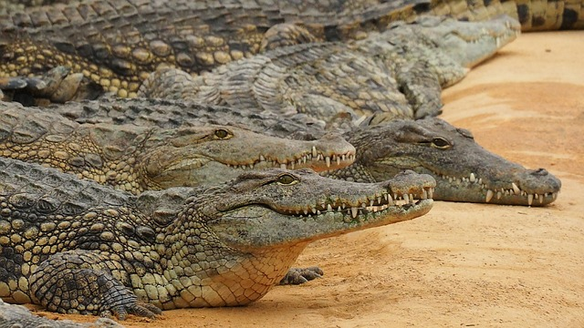

Fauna de la sabana
Los animales mas peligrosos
La fauna africana es una de las más abundantes de todo el mundo
ya que engloba casi 23.000 especies. Resulta de especial
interés conocer cuáles son los animales más peligrosos de África
, como el hipopótamo o el cocodrilo del Nilo. Al contrario
de lo que la mayoría de las personas piensan, los animales
más peligrosos no son el león ni la hiena.
Los 5 animales más peligrosos de África
- Elefante africano
- El elefante africano se caracteriza por su gran tamaño. En la edad adulta, puede alcanzar los 6.000 kilos de peso y los 4 metros de altura. Vive en manadas lideradas por una matriarca, la hembra de mayor edad. El elefante africano es completamente herbívoro y puede ingerir hasta 225 kilos de alimento al día.
- Hipopótamo
- El hipopótamo es un mamífero de gran tamaño, que puede pesar hasta 3.200 metros y medir hasta 3,5 metros. Es un excelente nadador y puede contener hasta 5 minutos la respiración bajo el agua. Vive en manadas de entre 20 y 100 individuos y tiene un comportamiento muy territorial y agresivo. Es el animal que más muertes de humanos causa en África.

- Bufalo del cabo
- En la actualidad, sólo existen dos tipos de búfalos: el búfalo del cabo africano y el búfalo de agua asiático. El búfalo del cabo es un animal herbívoro cuyo peso oscila entre los 800 y los 1.000 kilos en la edad adulta. Aunque no tiene buena vista, su oído y olfato son excelentes. Es un animal muy peligroso, con un comportamiento agresivo y que puede alcanzar los 57 kilómetros por hora si se siente en peligro.
- Cocodrilo del Nilo
- El cocodrilo del Nilo es uno de los cocodrilos más grandes que existen en el mundo, con una longitud de hasta 6 metros y un peso de hasta 220 kilos. Vive en Kenia, Somalia y Egipto y es carnívoro. Tiene una gran fuerza, y se puede alimentar de mamíferos de gran tamaño, así como de humanos. Cabe señalar que su mordida es la más poderosa del reino animal.

- Mamba negra
- La mamba negra es una serpiente venenosa muy peligrosa. Mide 2,5 metros, aunque se han hallado ejemplares de hasta 4,5 metros de longitud. Vive en los países del sur de África y su mordedura es muy potente, con la que inyecta un veneno letal a sus presas. Aunque se muestra tímida y solitaria, también es muy territorial, así que cuando se siente amenazada responde de forma agresiva.
pagina anterior